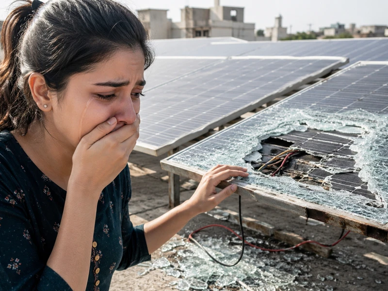

परिचय
घरावर किंवा शेतात बसवलेली सोलर सिस्टीम ही एक मोठी आर्थिक गुंतवणूक असते. पण अनेकदा वादळ, गारपीट, झाडांची फांदी पडणे किंवा चोरी होणे यांसारख्या घटनांमुळे सोलर पॅनेल्सचे नुकसान होते. अशा प्रसंगी घाबरून न जाता योग्य पावले उचलल्यास मोठा आर्थिक फटका टाळता येतो. या मार्गदर्शिकेत आपण सोलर पॅनल चोरी किंवा खराब झाल्यास **एफआयआर (FIR), इन्शुरन्स क्लेम (Insurance Claim), वॉरंटी (Warranty)** आणि सुरक्षेच्या उपायांबद्दल सविस्तर माहिती जाणून घेणार आहोत.
१. सोलर पॅनल चोरी झाल्यास तात्काळ काय पावले उचलावीत?
Key Takeaways
- चोरी झाल्यास २४ तासांच्या आत पोलीस तक्रार (FIR) दाखल करणे आणि इन्शुरन्स कंपनीला कळवणे अनिवार्य आहे.
जर तुमचे सोलर पॅनेल किंवा इनव्हर्टर चोरीला गेले असेल, तर त्वरित खालील टप्पे पूर्ण करा:
- पोलीस ठाण्यात FIR नोंदवा: नजीकच्या पोलीस ठाण्यात जाऊन चोरीची प्रथम खबर (FIR) नोंदवा. एफआयआरच्या प्रतवर सोलर पॅनेलचे सिरीयल नंबर नमूद करा.
- इन्शुरन्स कंपनीला सुचित करा: विमा कंपनीला २४ ते ४८ तासांच्या आत चोरीची माहिती द्या आणि क्लेम फॉर्म भरा.
- सोलर इन्स्टॉलर व महावितरणला कळवा: चोरी गेलेले पॅनेल सिस्टीममधून काढून टाकल्यामुळे इनव्हर्टर बंद ठेवा आणि महावितरणला माहिती द्या.
निसर्गाच्या कोपामुळे किंवा अपघातात सोलर फुटल्यास काय करावे?
२. नैसर्गिक आपत्ती किंवा अपघातामुळे नुकसान झाल्यास काय करावे?
Key Takeaways
- वादळ, गारपीट किंवा आगीमुळे झालेले भौतिक नुकसान विम्याच्या (Property/Solar Insurance) कक्षेत येते.
नुकसानीचा प्रकार आणि त्यानुसार मिळणारे संरक्षण खालील तक्त्यावरून समजून घ्या:
| नुकसानीचे कारण | वॉरंटीमध्ये समाविष्ट? | विम्यात (Insurance) समाविष्ट? | कारवाई काय करावी? |
|---|---|---|---|
| गारपीट / वादळात पॅनल फुटणे | ❌ नाही | ✅ होय | फोटो/व्हिडिओ काढून क्लेम दाखल करा |
| वीज पडणे / शॉर्ट सर्किट | ❌ नाही | ✅ होय | सर्जरी अरेस्टर व विमा तपासणी |
| उत्पादनातील बिघाड (Defect) | ✅ होय (कंपनी बदलून देते) | ❌ नाही | इन्स्टॉलर / कंपनीशी संपर्क साधा |
| सोलर पॅनलची चोरी | ❌ नाही | ✅ होय | FIR आणि विमा क्लेम करा |
टीप: सोलर कंपनीची वॉरंटी (Manufacturing Warranty) ही निसर्गामुळे किंवा अपघातामुळे झालेल्या नुकसानीला लागू होत नाही.
सोलर विमा (Solar Insurance Claim) कसा घ्यावा?
३. सोलर सिस्टीमचा विमा क्लेम करण्याची योग्य पद्धत कोणती?
Key Takeaways
- अचूक पुरावे, फोटो, खरेदीचे बिल आणि एफआयआर प्रत असल्यास विमा क्लेम सहजासहजी मंजूर होतो.
इन्शुरन्स क्लेम करताना खालील कागदपत्रे व प्रक्रिया महत्त्वाची ठरते:
- १. फोटो आणि व्हिडिओ पुरावे: नुकसान झालेल्या जागेचे व फुटलेल्या पॅनेल्सचे विविध कोनातून स्पष्ट फोटो घ्या. पुरावे गोळा करेपर्यंत पॅनेल्स हलवू नका.
- २. खरेदीचे बिल (Original Invoice): सोलर सिस्टीम खरेदी करतानाचे मूळ बिल आणि पॅनेलचे सिरीयल नंबर असणारी लिस्ट जवळ ठेवा.
- ३. सर्व्हेअर तपासणी (Surveyor Inspection): विमा कंपनीचा अधिकारी (Surveyor) जागेवर येऊन पाहणी करेल. त्याला सर्व सहकार्य करा.
भविष्यात चोरी आणि नुकसान टाळण्यासाठी काय खबरदारी घ्यावी?
४. सोलर पॅनल चोरी आणि नुकसान रोखण्यासाठी प्रतिबंधात्मक उपाय?
Key Takeaways
- एंटी-थेफ्ट नट-बोल्ट आणि होम इन्शुरन्समध्ये सोलरचा समावेश करणे हे सर्वोत्तम सुरक्षितता उपाय आहेत.
नुकसान व चोरी टाळण्यासाठी खालील गोष्टींची काळजी घ्या:
४.१ अँटी-थेफ्ट नट बॉल्ट (Anti-Theft Fasteners)
सोलर स्ट्रक्चरवर पॅनेल्स बसवताना साध्या बोल्टऐवजी अँटी-थेफ्ट बोल्ट वापरा, जे खास टूलशिवाय काढता येत नाहीत.
४.२ सीसीटीव्ही आणि लाईटनिंग अरेस्टर (CCTV & LA)
अंगणात किंवा छतावर सीसीटीव्ही कॅमेरा लावा आणि विजेच्या कडक्यापासून संरक्षणासाठी लाईटनिंग अरेस्टर व प्रॉपर अर्थिंग करा.
नवीन सोलर बसवताना सुरुवातीपासूनच विमा काढणे फायदेशीर ठरते का?
महत्त्वाचे निष्कर्ष
सोलर पॅनल चोरी झाल्यास लगेच पोलीस तक्रार (FIR) करणे आणि विमा कंपनीला सुचित करणे आवश्यक आहे.
गारपीट, वादळ व अपघातातील नुकसान वॉरंटीमध्ये बसत नाही, त्यासाठी सोलर विमाच (Solar Insurance) उपयुक्त ठरतो.
अँटी-थेफ्ट बोल्ट आणि सीसीटीव्हीमुळे सोलर पॅनेल चोरीची शक्यता ९०% कमी होते.
पुढचं पाऊल:
तुमच्या सध्याच्या सोलर सिस्टीमचा विमा काढला आहे का ते तपासा. नसेल तर आजच तुमच्या गृह विमा पॉलिसीमध्ये (Home Insurance Policy) सोलर सिस्टीम समाविष्ट करून घ्या किंवा स्वतंत्र सोलर इन्शुरन्स घ्या.
People Also Ask
साधारणपणे ३ kW सोलर सिस्टीमसाठी विम्याचा वार्षिक हप्ता (Premium) रू. ५०० ते रू. १,५०० च्या दरम्यान असतो.
नाही, गारपीट हा नैसर्गिक आपत्तीचा (Act of God) भाग असल्याने वॉरंटीमध्ये काच बदलून मिळत नाही. यासाठी विमा संरक्षण आवश्यक असते.
सोलर खरेदी करताना मिळालेल्या मूळ बिलावर (Tax Invoice) किंवा वॉरंटी कार्डवर सर्व पॅनेल्सचे बारकोड आणि सिरीयल नंबर छापलेले असतात.